Common Structures of Bias
Malcolm Barrett
2024-02-04
Source:vignettes/bias-structures.Rmd
bias-structures.RmdA quick note on terminology: I use the terms confounding and selection bias below, the terms of choice in epidemiology. The terms, however, depend on the field. In some fields, confounding is referred to as omitted variable bias or selection bias. Selection bias also sometimes refers to variable selection bias, a related issue that refers to misspecified models.
Introduction
In addition to helping identify causal effects, the consistency of directed acyclic graphs (DAGs) is very useful in thinking about different forms of bias. Often, many seemingly unrelated types of bias take the same form in a DAG. Methodological issues in a study often reduce to a problem of 1) not adequately blocking a back-door path or 2) selecting on some variable that turns out to be a collider.
Confounders and confounding
Classical confounding is simple. A confounder is associated with both the exposure and the outcome. Let’s consider a classic example: coffee, smoking, and cancer. Smoking is a risk factor for a number of cancers, and people who drink coffee are more likely to smoke. Coffee doesn’t actually cause lung cancer, but they are d-connected through smoking, so they will appear to be associated:
confounder_triangle(x = "Coffee", y = "Lung Cancer", z = "Smoking") %>%
ggdag_dconnected(text = FALSE, use_labels = "label")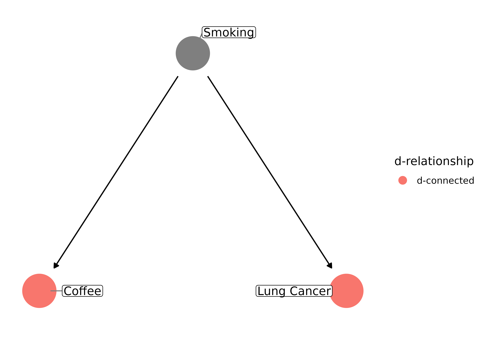
But if you think about it, this DAG is incorrect. Smoking doesn’t cause coffee drinking; something else, say a predilection towards addictive substances, causes a person to both smoke and drink coffee. Let’s say that we had a psychometric tool that accurately measures addictive behavior, so we can control for it. Now our DAG looks like this:
coffee_dag <- dagify(
cancer ~ smoking,
smoking ~ addictive,
coffee ~ addictive,
exposure = "coffee",
outcome = "cancer",
labels = c(
"coffee" = "Coffee",
"cancer" = "Lung Cancer",
"smoking" = "Smoking",
"addictive" = "Addictive \nBehavior"
)
) %>%
tidy_dagitty(layout = "tree")
ggdag(coffee_dag, text = FALSE, use_labels = "label")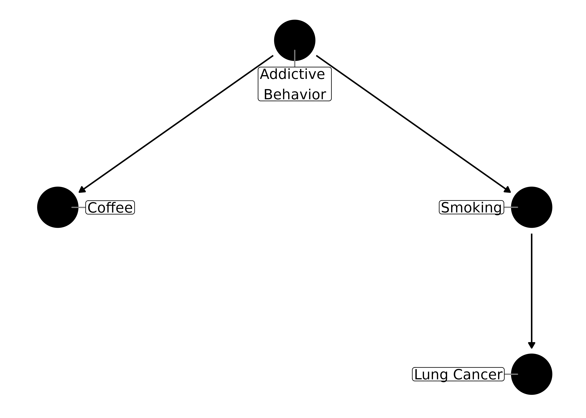
Which one is the confounder, addictive behavior or smoking? Only one or the other needs to be controlled for to block the path:
ggdag_adjustment_set(coffee_dag, text = FALSE, use_labels = "label", shadow = TRUE)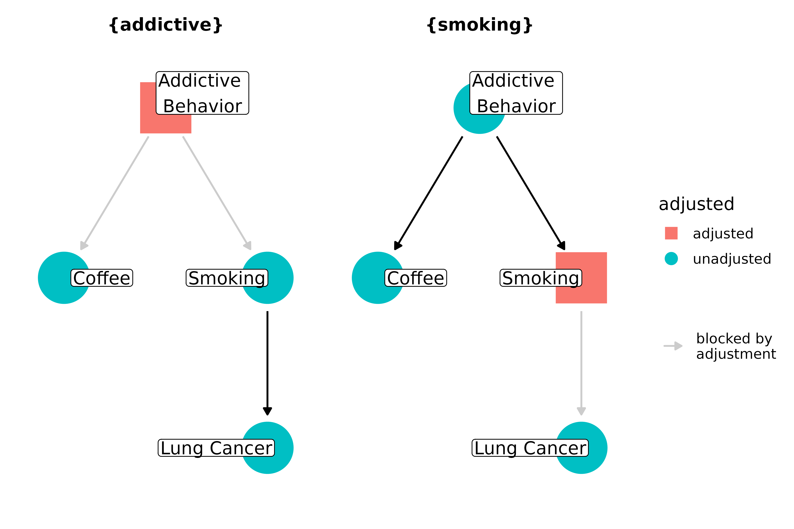
Focusing on individual confounders, rather than confounding pathways, is a common error in thinking about adjusting our estimates. We should be more concerned blocking all confounding pathways than with including any particular variable along those pathways. (It’s worth noting, though, that when I say you only need one variable to block a path, that assumes you are measuring and modeling the variable correctly. If, for example, there is measurement error, controlling for that variable may still leave residual confounding, necessitating a more subtle level of control with other variables on the pathway; see the section on measurement error below. Moreover, it’s important to know that you expect to block the path on average; normal sampling issues, e.g. sample size, still come into play.)
Colliders, M-bias, and butterfly bias
Stratifying on a collider is a major culprit in systematic bias. Controlling for a collider–a node where two or more arrow heads meet–induces an association between its parents, through which confounding can flow:
collider_triangle() %>%
ggdag_dseparated(controlling_for = "m")
Here, the example is fairly simple and easy to deal with: m is a child of x and y and just shouldn’t be adjusted for. It can get more complicated, though, when m is something that seems like it is a confounder or when it represents a variable that contributes to whether or not a person enters the study. Often this takes the form of M-shaped bias, or M-bias. Let’s consider an example from Modern Epidemiology: the association between education and diabetes. Let’s assume that lack of education isn’t a direct cause of diabetes. When we are putting together our analysis, we ask: should we adjust for the participant’s mother’s history of diabetes? It’s linked to education via income and to participant’s diabetes status via genetic risk, so it looks like this:
m_bias(
x = "Education",
y = "Diabetes",
a = "Income during Childhood",
b = "Genetic Risk \nfor Diabetes",
m = "Mother's Diabetes"
) %>%
ggdag(use_labels = "label")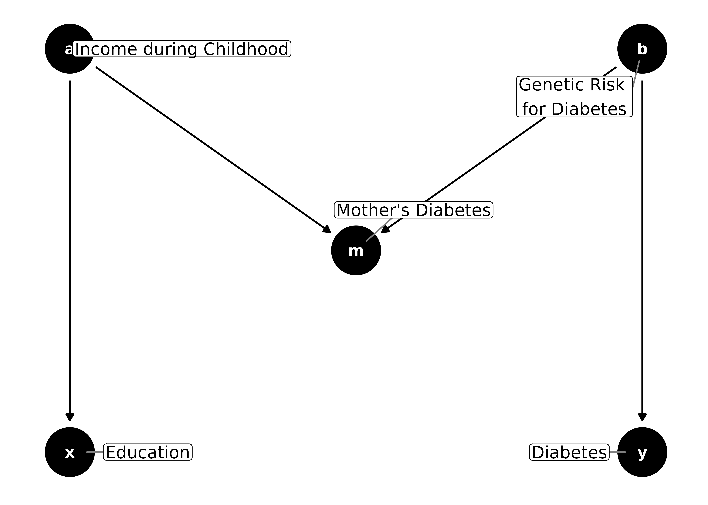
From a classical confounding perspective, it seems like the mother’s diabetes status might be a confounder: it’s associated with both the exposure and outcome, and it’s not a descendant of either. However, the association with the outcome and exposure is not direct for either; it’s due to confounding by genetic risk and childhood income, respectively. Drawing it as a DAG makes it clear that the mother’s diabetes status is a collider, and adjusting for it will induce an association between genetic risk and childhood income, thus opening a back-door path from education to diabetes status:
m_bias(
x = "Education",
y = "Diabetes",
a = "Income during \nChildhood",
b = "Genetic Risk \nfor Diabetes",
m = "Mother's Diabetes"
) %>%
ggdag_dseparated(controlling_for = "m", use_labels = "label")
Again, this is relatively easy–just don’t control for the collider.
But what about when your study design already stratifies on m?
Let’s consider an example where m represents having surgery.
Let’s say we are conducting a study involving participants who had
surgery due to back pain. We suspect that people who are ready to commit
to physical therapy and changes in their daily life will have a greater
decrease in pain after a year than those who aren’t. We’ve developed a
psychometric tool that measures readiness for surgery, and we are going
to look at the association between readiness and change in pain. The
readiness scale depends on an underlying latent variable that is true
readiness, which we are measuring with some error. Change in pain
depends on baseline pain. Both underlying readiness and baseline pain
are also predictive of whether or not someone has surgery. By
definition, we are selecting on surgical status: we feel it’s unethical
to withhold it and irresponsible to force all participants to have
surgery. So, we can’t know how people who didn’t have surgery would
react. Surgical status is inherently stratified for, because we’re only
looking at people who have had it (note that from here on out, I’m not
going to show the paths opened by adjusting for a collider, the default
in ggdag, for clarity):
coords <- dagitty::coordinates(m_bias()) %>%
coords2df()
coords$name <- c("readiness", "pain", "surgery", "ready_tool", "pain_change")
surgical_dag <- dagify(
ready_tool ~ readiness,
surgery ~ readiness + pain,
pain_change ~ ready_tool + pain,
exposure = "ready_tool",
outcome = "pain_change",
latent = "readiness",
labels = c(
ready_tool = "Measured \nReadiness",
pain_change = "Change \nin Pain",
readiness = "Underlying \nReadiness",
pain = "Baseline \nPain",
surgery = "Surgical \nStatus"
),
coords = coords2list(coords)
) %>%
control_for("surgery")
ggdag_adjust(surgical_dag, text = FALSE, use_labels = "label", collider_lines = FALSE)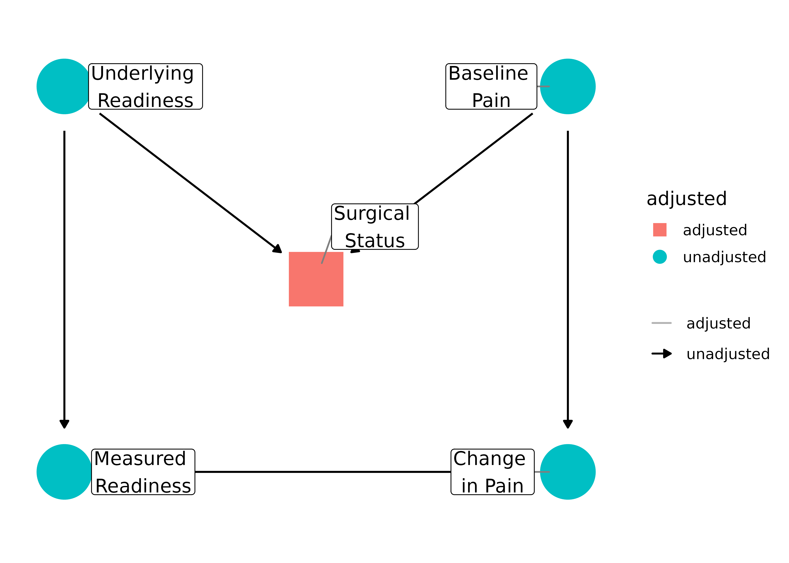
We can’t unstratify by surgical status, so our best bet is to block the back-door path opened by stratifying on it. We can’t adjust for the latent variable (and, if we’re measuring it really well, the latent variable and the tool are one in the same), so all we can do is control for baseline pain. Note that, technically, surgical status is part of the adjustment set:
ggdag_adjustment_set(surgical_dag, text = FALSE, use_labels = "label", shadow = TRUE)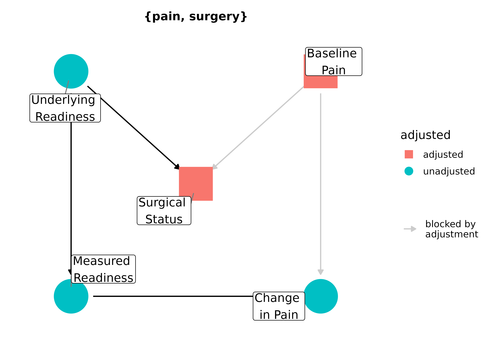
What about if a variable is both a collider and a cause of the exposure and outcome (a classical confounder)? This is an extension of M-bias sometimes called butterfly bias or bow-tie bias. The variable is a part of two paths: one that it’s blocking as a collider and a back-door path that is confounding the relationship between x and y. What to do?
ggdag_butterfly_bias(edge_type = "diagonal")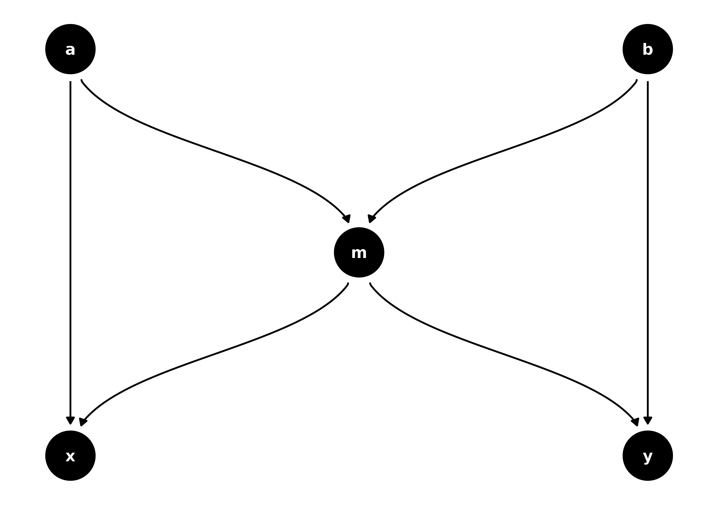
The strategy is basically the same as above; we need to control for m to block the back-door path, but that opens up a relationship between a and b, so we need to block that path, too.
ggdag_adjustment_set(butterfly_bias(), shadow = TRUE)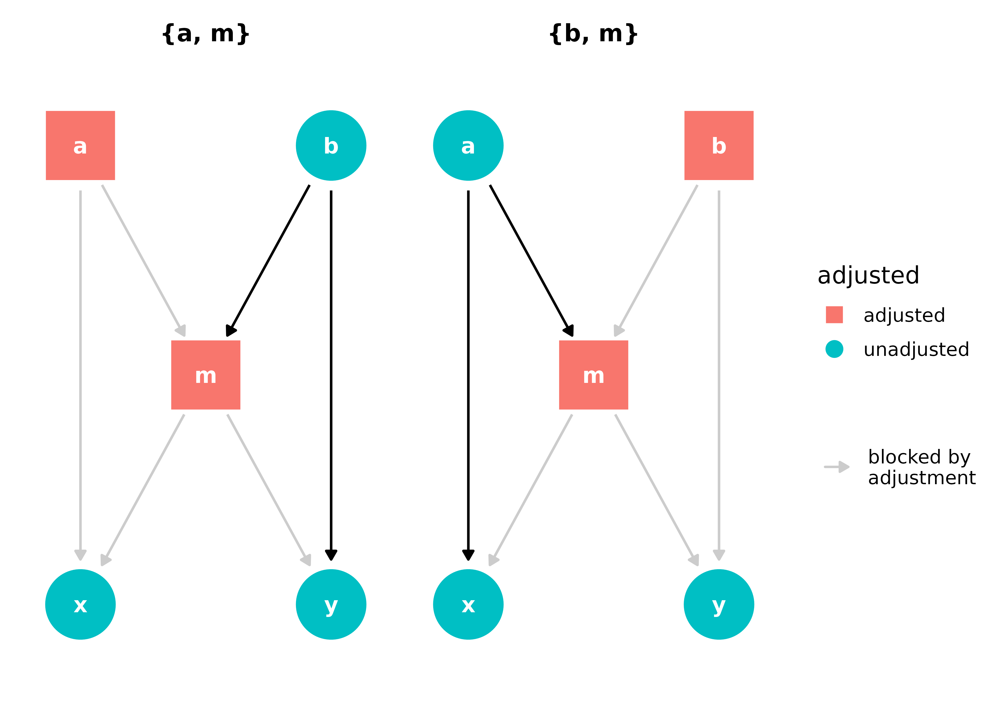
Adjusting for either set, {a, m} or {b, m}, will give allow us to estimate the causal effect of x on y.
Measurement error
Measurement error is the degree to which we mismeasure a variable, which can lead to bias in a number of ways. If the error is dependent on the exposure or the outcome, (e.g. we measure the exposure with less accuracy for a group without a disease than with it), it is called differential measurement error. If the error has nothing to do with the exposure or outcome, it’s called non-differential measurement error. Under most conditions, non-differential error will bias the estimate of effect towards the null. In this way, it’s at least predictable, but for small effects or inadequately powered studies, it can make a true effect disappear. If there is error in both the exposure and outcome, the errors themselves can also be associated, opening a back-door path between the exposure and outcome.
Let’s consider an example with non-differential error for the outcome and differential error for the exposure. One common situation where this can occur is recall bias. Let’s say we want to know if taking multivitamins in childhood helps protect against bladder cancer later in life.
# set coordinates
coords <- tibble::tribble(
~name,
~x,
~y,
"bladder_cancer",
1,
0,
"vitamins",
0,
0,
"diagnosed_bc",
1,
1,
"recalled_vits",
0,
1,
"bc_error",
1,
2,
"vits_error",
0,
2,
)
bladder_dag <- dagify(
diagnosed_bc ~ bc_error + bladder_cancer,
recalled_vits ~ vitamins + vits_error,
vits_error ~ bladder_cancer,
labels = c(
bladder_cancer = "Bladder Cancer",
vitamins = "Childhood Vitamin \nIntake",
diagnosed_bc = "Diagnosed \nBladder Cancer",
recalled_vits = "Memory of \nTaking Vitamins",
bc_error = "Measurement Error, \nDiagnosis",
vits_error = "Measurement Error, \nVitamins"
),
coords = coords
)
ggdag(bladder_dag, text = FALSE, use_labels = "label")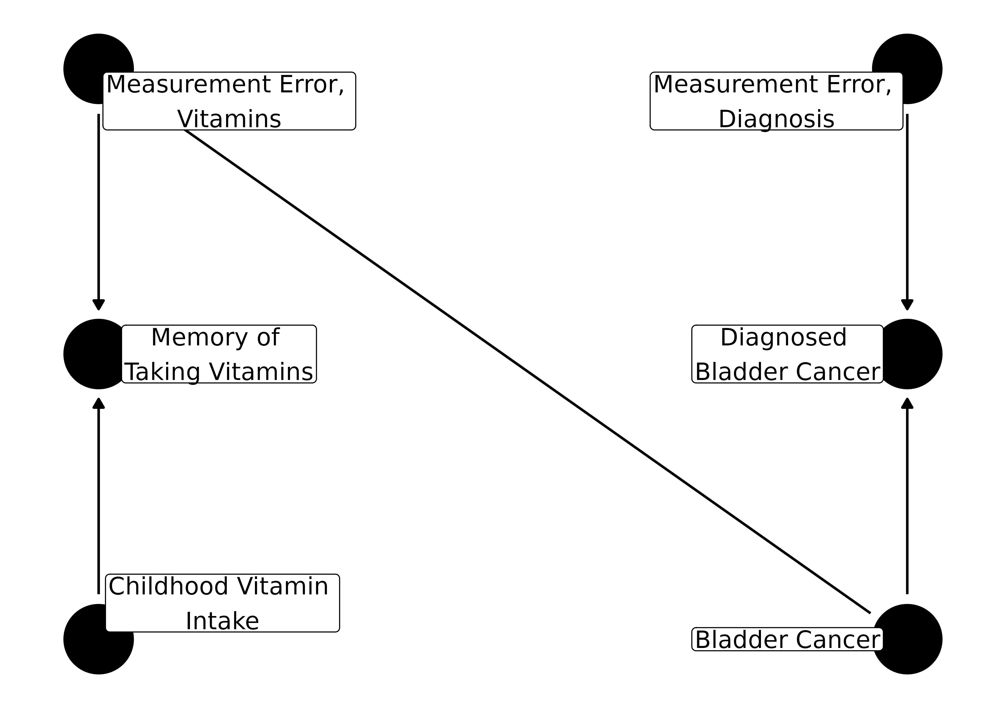
For the outcome, the bias only depends on how well diagnosis of bladder cancer represents actually having bladder cancer. For the exposure, however, it also depends on if you have cancer or not: people who are sick tend to spend more time reflecting on what could have caused the illness. Thus, they will remember the vitamins they took as children, on average, a little better than controls. If there is no effect of vitamins on bladder cancer, this dependency will make it seem as if vitamins are a risk for bladder cancer. If it is, in fact, protective, recall bias can reduce or even reverse the association.
Measurement error can also cause bias in longitudinal settings. Let’s consider another example from Modern Epidemiology, which uses the Centers for Epidemiologic Studies–Depression (CES-D) scale, a common tool to assess depression that is known to have measurement error. In this example, the question is if graduating from college with an honors degree affects how depression changes after graduation. Assuming it doesn’t, adjusting for baseline CES-D score–a common practice–can induce bias via measurement error:
# set coordinates
coords <- tibble::tribble(
~name,
~x,
~y,
"honors",
1,
3,
"depression",
2,
3,
"cesd",
2,
2,
"baseline_error",
2,
1,
"depression_change",
3,
3,
"cesd_change",
3,
2,
"followup_error",
3,
1
)
cesd_dag <- dagify(
depression ~ honors,
cesd ~ depression + baseline_error,
cesd_change ~ depression_change + followup_error + baseline_error,
labels = c(
honors = "Honors Degree",
depression = "Depression",
cesd = "CES-D",
cesd_change = "Change \nin CES-D",
depression_change = "Change in \nDepression",
baseline_error = "Measurement Error, \nBaseline",
followup_error = "Measurement Error, \nFollow-up"
),
coords = coords
)
cesd_dag %>%
ggdag_dconnected(
from = "honors",
to = "cesd_change",
controlling_for = "cesd",
text = FALSE,
use_labels = "label",
collider_lines = FALSE
)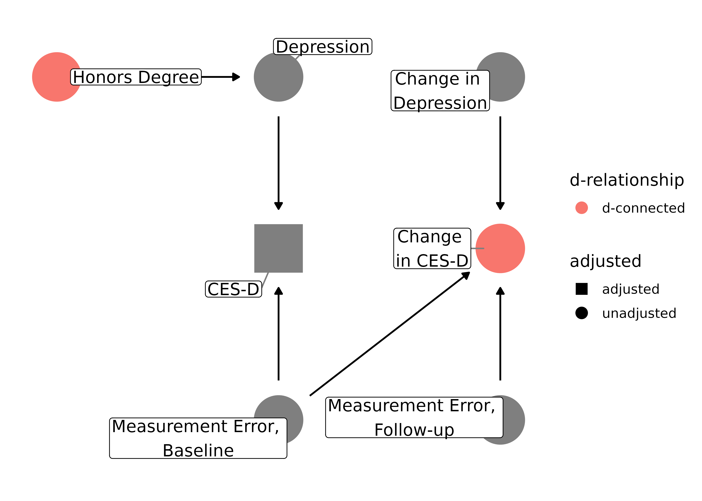
Because both the baseline score and the change are due, in part, to measurement error at baseline, controlling for baseline CES-D score (a collider) causes change in CES-D and receiving an honors degree to be d-connected.
Selection bias
We have already seen a few examples of selection bias, but let’s consider a couple more that are potential pitfalls in common design types. Let’s say we’re doing a case-control study and want to assess the effect of smoking on glioma, a type of brain cancer. We have a group of glioma patients at a hospital and want to compare them to a group of controls, so we pick people in the hospital with a broken bone, since that seems to have nothing to do with brain cancer. However, perhaps there is some unknown confounding between smoking and being in the hospital with a broken bone, like being prone to reckless behavior. In the normal population, there is no causal effect of smoking on glioma, but in our case, we’re selecting on people who have been hospitalized, which opens up a back-door path:
coords <- tibble::tribble(
~name,
~x,
~y,
"glioma",
1,
2,
"hospitalized",
2,
3,
"broken_bone",
3,
2,
"reckless",
4,
1,
"smoking",
5,
2
)
dagify(
hospitalized ~ broken_bone + glioma,
broken_bone ~ reckless,
smoking ~ reckless,
labels = c(
hospitalized = "Hospitalization",
broken_bone = "Broken Bone",
glioma = "Glioma",
reckless = "Reckless \nBehavior",
smoking = "Smoking"
),
coords = coords
) %>%
ggdag_dconnected(
"glioma",
"smoking",
controlling_for = "hospitalized",
text = FALSE,
use_labels = "label",
collider_lines = FALSE
)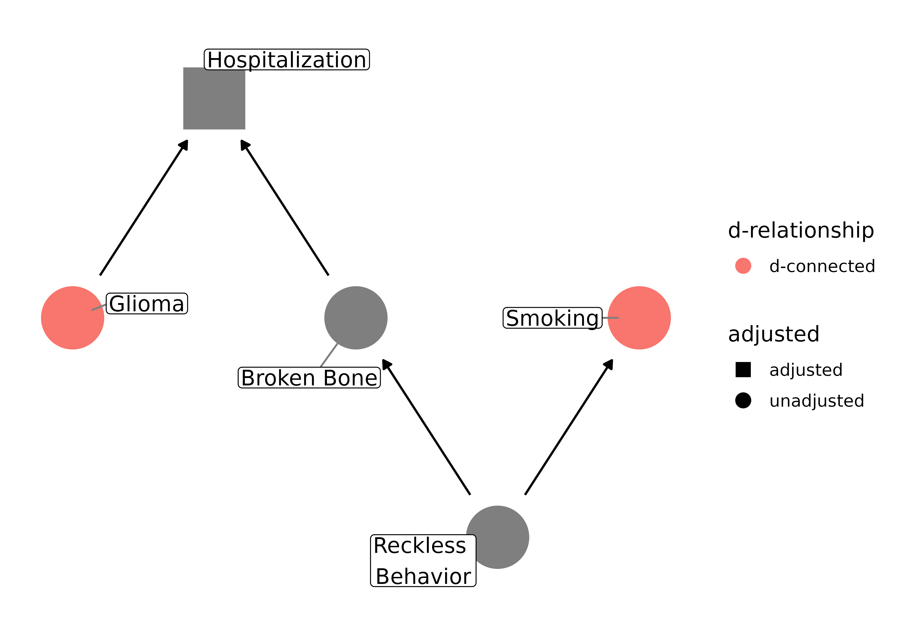
Even though smoking doesn’t actually cause glioma, it will appear as if there is an association. Actually, in this case, it may make smoking appear to be protective against glioma, since controls are more likely to be smokers.
Let’s also consider how bias arises in loss-to-follow-up. In a randomized clinical trial or cohort study, the main threat of selection bias is not through who enters the study (although that may affect generalizability) but who leaves it. If loss-to-follow-up is associated with the exposure or outcome, the relationship between the two may be biased. Let’s consider a trial where we are testing a new HIV drug and its effect on CD4 white blood cell count. If the treatment causes symptoms, participants may leave the trial. Similarly, there may be those whose HIV is getting worse and thus more symptomatic, which also may cause people to leave the trial. If we only have information on people who stay in the study, we are stratifying by follow-up status:
dagify(
follow_up ~ symptoms,
symptoms ~ new_rx + dx_severity,
cd4 ~ dx_severity,
labels = c(
follow_up = "Follow-Up",
symptoms = "Symptoms",
new_rx = "New HIV Drug",
dx_severity = "Underyling \nHIV Severity",
cd4 = "CD4 Count"
)
) %>%
ggdag_adjust(
"follow_up",
layout = "mds",
text = FALSE,
use_labels = "label",
collider_lines = FALSE
)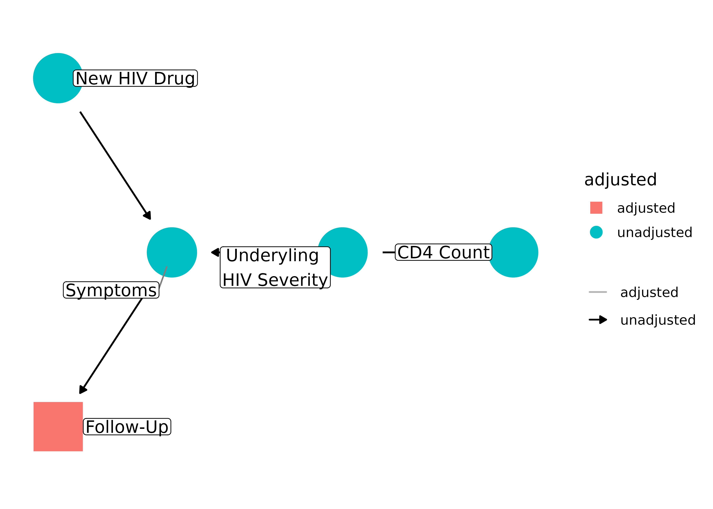
But follow-up is downstream from a collider, symptoms. Controlling for a downstream collider induces bias and, because we only have information on people who remain in the study, we are inadvertently stratifying on follow-up status (see the vignette introducing DAGs for more on downstream colliders). Thus, the effect estimate between the HIV drug and CD4 count will be biased.
Resources
Many, if not all, forms of systematic bias can be drawn as DAGs. Here are a few sources with interesting examples:
- Miguel Hernán’s course on DAGs includes a number of examples on common structures of bias: Causal Diagrams: Draw Your Assumptions Before Your Conclusions. Also see his article A structural approach to selection bias.
- The chapter on DAGs in Modern Epidemiology includes a couple of the examples here and many more directly related to conducting observational research, including measurement error, selection bias, residual confounding, and missing data.